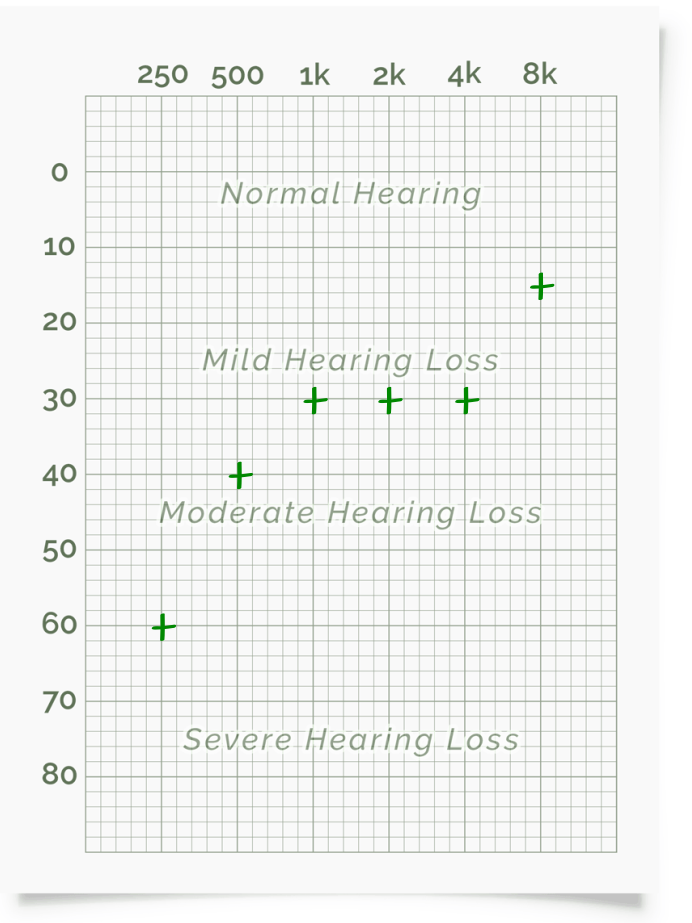
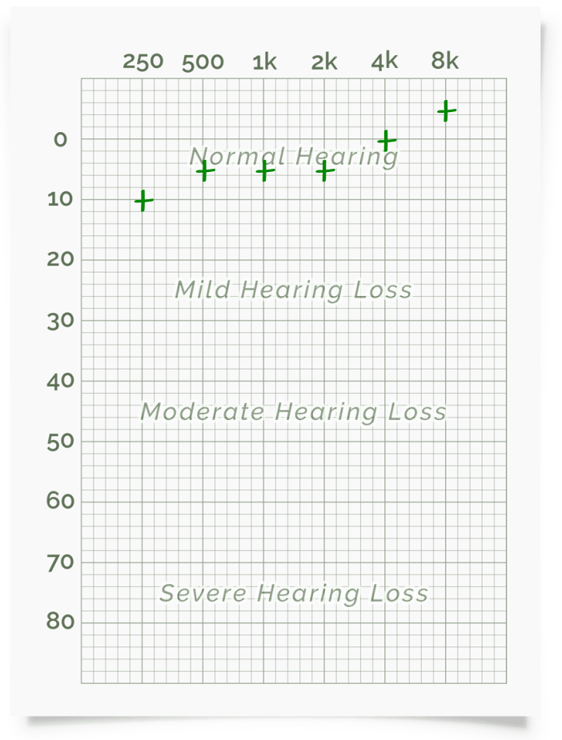

Laboratório de Percepção auditiva
Teste de audiometria - Resultados dos Integrantes
Padrão audiométrico para ambas Orelhas - Gabriel
Áudio do computador

Áudio com fone
Comentários
...
Padrão audiométrico para ambas Orelhas - Jaqueline
Áudio do computador

Áudio com fone

Comentários
Com o fone de ouvido acredito que o resultado esteja mais próximo da realidade se comparado ao teste sem o fone. Percebi que vários sons estavam dificultando executar o teste: cachorros latindo, vozes na rua, vozes vindas de televisão, barulho de carro. Todos esses sons não me incomodam normalmente, mas para esse teste em específico, percebi o quanto de poluição sonora estou inserida e não percebia
Padrão audiométrico para ambas Orelhas - Leonardo
Áudio do computador
Áudio com fone
Comentários
Durante a realização dos experimentos, foi clara a minha percepção de que o ruído externo do ambiente em que eu estava influenciou o desempenho da minha audição. Foi muito evidente para mim que eu conseguia me concentrar muito mais nos sons do teste durante o experimento com fones de ouvido. Os fones tiveram um grande impacto ao reduzirem a intensidade do ruído externo, possibilitando com que houvesse um menor mascaramento sonoro.
Padrão audiométrico para ambas Orelhas - Marcos
Áudio do computador

Áudio com fone

Comentários
Acredito que meu teste no audio do computador não condiz com a realidade, pois senti uma maior facilidade em escutar as freqências mais graves, algo característico do meu sistema de som. Já com os fones de ouvido o resultado foi mais interessante.
Teste de Faixa Audível
Gabriel
Sem fone
fa mín:
fa máx:
Com fone
fa mín:
fa máx:
Celular
fa mín:
fa máx:
Comentários
...
Jaqueline
Sem fone
fa mín: 40 Hz
fa máx: 15.800 Hz
Com fone
fa mín: 22 Hz
fa máx: 16.345 Hz
Celular
fa mín: 139 Hz
fa máx: 14.200 Hz
Comentários
Novamente tive muita interferência de sons externos nos testes sem o fone (celular e computador). O teste com o celular foi o que mais precisei prestar muita atenção para ouvir e as frequências mínima e máxima tiveram os resultados mais discrepantes comparado aos outros
Leonardo
Sem fone
fa mín: 170 Hz
fa máx: 17500 Hz
Com fone
fa mín: 20 Hz
fa máx: 17500
Celular
fa mín: 20 Hz
fa máx: 17000 Hz
Comentários
Foram percebidos sons mais altos na região entre 2500 Hz e 7500 Hz em relação ao restante do intervalo audível.
As diferenças entre os dispositivos utilizados no experimento se devem a, principalmente, questões de hardware em baixas frequências (foi facilmente perceptível a diferença que a placa de som de um notebook promove em relação tanto à placa de som instalada no smartphone como ao fone de ouvido utilizado).
Marcos
Sem fone
fa mín: 20 Hz
fa máx: 17192 Hz
Com fone
fa mín: 20 Hz
fa máx: 18130 Hz
Celular
fa mín: 80 Hz
fa máx: 17537 Hz
Comentários
No celular, a freqência min e consideravelmente maior que nos outros dispositivos. Possivelmete por ter um auto falante menor, ele não reproduz tão bem as freqências mais baixas.
Apesar do nível do sinal ser sempre o mesmo, quais são as frequências em que o som parece ser muito baixo e, também, onde parece que ele sobe mais?
As frequências agudas, em torno de 400 Hz até 4.000 Hz, a sensação é de que o volume foi ajustado, mais potente
Por que ocorrem as diferenças?
??????
Teste de Mascaramento de Tons Harmônicos
Lab anterior pedaços de codigo apenas
Imagens do Integrantes